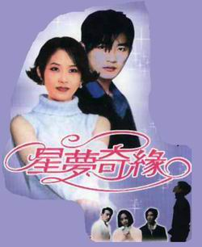
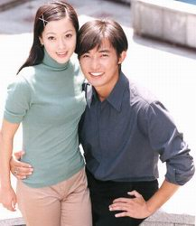
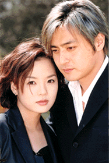

天天编程网
tvb手册
八婆笔记
心情说
日剧场
日志
未分类
电幻光影
看图说话
韩剧志
韩剧经典情侣大盘点（1）
PS：按时间先后排序
NO。1《星梦奇缘》中的崔真实和安在旭

NO。2《天桥风云》中的金南珠和韩在石
NO。3《泡沫爱情》中的金喜善和安在旭

NO。4《夏娃诱惑》中的蔡琳和张东健

NO。5《蓝色生死恋》中的宋慧乔和宋承宪
NO。6《明朗少女成功记》中的张娜拉和张赫
NO。7《罗曼史》中的金荷能和金载元
NO。8《射星》中的全度妍和赵寅成
导航栏
2006年不应该错过的韩剧
2007年不应该错过的韩剧
2007年韩剧之一月
2007年韩剧之七月
2007年韩剧之三月
2007年韩剧之六月
2007年韩剧之十月
2007韩剧推荐之十二月
2008年韩剧推荐（上）
[转载]戏说韩国综艺情侣之XMAN篇
[转载]戏说韩国综艺情侣之反转剧篇
[转载]戏说韩国综艺情侣之情书篇1
[转载]戏说韩国综艺情侣之情书篇2
[转载]戏说韩国综艺情侣之情书篇3
[转载]戏说韩国综艺情侣之情书篇4
一个角色的胜利——韩剧男猪宿命论
写给爱着韩剧的我们之韩剧典藏(199…
太阳的女人：是谁造就今天的我
我人生最后的绯闻：希望旧爱还很美
盘点韩剧新晋男主角（上）
盘点韩剧新晋男主角（下）
韩剧“姐弟恋”逐个数（1）
韩剧“姐弟恋”逐个数（2）
韩剧中那些令人难忘的第二男猪们
韩剧经典情侣大盘点（1）
韩剧经典情侣大盘点（2）
韩剧经典情侣大盘点（5）
韩剧经典情侣大盘点（３）
韩剧经典情侣大盘点（４）